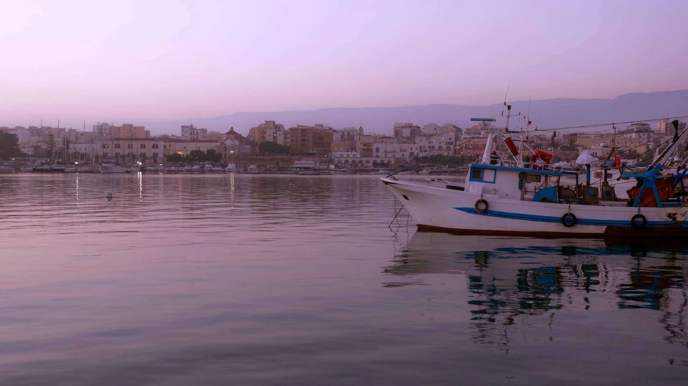

Borghi
Marzo 2026 · 7 min di lettura

Mattinata è uno di quei posti che non sai spiegare bene a chi non c'è mai stato. Di giorno è un paese contadino con le case imbiancate a calce, i vicoli stretti, i vecchi seduti sulle sedie davanti alla porta. Di sera le sue calette diventano tra le più belle del Gargano: acqua turchese, scogliere bianche, il sole che tramonta dietro la montagna tingendo tutto di arancio. È un paese che vive una doppia vita, e pochi turisti hanno la fortuna di vederle entrambe.
Si trova a 25 km da Manfredonia, ma sembra un altro mondo. Chi soggiorna a Casa e Bottega spesso lo scopre per caso, percorrendo la strada costiera verso nord: lo vede comparire all'improvviso tra le curve, bianco e compatto sul cucuzzolo, con il mare sotto e la montagna del Gargano dietro. E quasi sempre si ferma.
Mattinata ha un centro storico piccolo ma autentico. Le case sono basse, intonacate di bianco, con balconi in ferro battuto e vasi di gerani. Le strade sono strette e in salita, lastricate con lo stesso calcare bianco delle scogliere vicine. La piazza principale ha una chiesa, qualche bar, i tavolini all'aperto. Non ci sono negozi di souvenir, non ci sono locali per turisti: è un paese dove la gente ci vive ancora, tutto l'anno.
Il mercato settimanale del mattino è uno dei posti migliori per capire il carattere del posto. I contadini portano le verdure dell'orto, il formaggio, le olive in salamoia, il miele di timo selvatico. I prezzi sono quelli che erano qualche decennio fa nelle città: bassi, senza margini turistici. Se sei del posto, trovi quello che ti serve. Se sei un visitatore, trovi qualcosa che non sapevi di voler comprare.
La costa di Mattinata è una sequenza di calette tra le scogliere di calcare bianco. Alcune si raggiungono in auto su strade sterrate, altre a piedi attraverso sentieri segnalati, altre ancora solo in barca. Questa varietà di accesso è quello che le rende speciali: le più belle sono anche le più faticose da raggiungere, e questa fatica le protegge dalla folla. La nostra guida alle scogliere e calette del Gargano include tutte le migliori calette di questa costa, con distanze, accessi e consigli pratici.
Il sentiero costiero che parte dal paese scende verso il mare attraverso la macchia mediterranea: leccio, mirto, rosmarino selvatico, il profumo che cambia a ogni curva. Il percorso dura circa 40 minuti in discesa per raggiungere le prime calette, e un'ora e mezza per arrivare a quelle più lontane. Si cammina su roccia calcarea e sassi: scarpe chiuse sono indispensabili, i sandali da mare vanno bene solo in spiaggia.
L'acqua nelle calette di Mattinata ha una trasparenza che non si dimentica. Il fondale è di ciottoli bianchi levigati che si vedono chiaramente anche a quattro o cinque metri di profondità. La posidonia cresce in prati densi appena oltre la battigia: è il segno di un mare sano, non inquinato, non calpestato da milioni di piedi ogni estate. Nuotare qui, con le scogliere bianche che riflettono il sole e il silenzio interrotto solo dall'acqua, è una di quelle esperienze che rimangono.
Il momento migliore per visitare Mattinata è da aprile a giugno, e poi di nuovo in settembre. In primavera il paese è ancora tranquillo, le calette quasi deserte, la vegetazione in fiore. Il mare da maggio è già balneabile con 20-22 gradi. I prezzi delle strutture ricettive nella zona sono più bassi del 30-40% rispetto ad agosto, e trovi parcheggio ovunque senza problemi.
Luglio e agosto cambiano completamente il carattere del posto. Le calette si riempiono di ombrelloni, la strada di accesso al litorale diventa un ingorgo nel fine settimana, i ristoranti hanno liste d'attesa. Mattinata in estate non è brutta, ma è diversa: diventa una destinazione balneare come tante altre. È in primavera e in autunno che mantiene quella qualità rara di borgo non ancora scoperto.
In inverno Mattinata è quasi deserta: la maggior parte dei locali chiude, rimangono i residenti e qualche ristorante aperto a orari ridotti. Ma il centro storico in inverno ha un suo fascino austero: i vicoli bagnati dalla pioggia, la nebbia che sale dalla montagna del Gargano, le case chiuse con le finestre sprangate. Un paesaggio completamente diverso, da vedere almeno una volta.
Da Manfredonia si arriva a Mattinata in 25-30 minuti percorrendo la SS89 in direzione nord. La strada è panoramica: dopo il porto di Manfredonia il paesaggio cambia rapidamente, le pianure costiere lasciano spazio alle prime scogliere, il mare si avvicina e si allontana alle curve. È uno dei tratti stradali più belli del Gargano meridionale.
Non ci sono autobus frequenti su questo percorso, specialmente fuori stagione. L'auto è praticamente indispensabile per arrivare a Mattinata e soprattutto per raggiungere le calette. Se non hai un'auto, alcune calette si raggiungono noleggiando una bicicletta a Manfredonia (la strada è in salita ma percorribile) o prenotando un'escursione in barca che parte direttamente dal porto di Manfredonia.
Chi sceglie Manfredonia come base per esplorare il Gargano meridionale ha Mattinata a portata di mano. La mattina puoi fare colazione nel centro storico di Manfredonia, raggiungere Mattinata entro le 9, trascorrere la giornata tra calette e sentieri, tornare per cena e l'aperitivo sul lungomare. È una giornata completa senza stress da logistica. Per avere un piano completo della settimana, il nostro itinerario Gargano in 7 giorni dedica un'intera giornata a Mattinata e alla Baia delle Zagare.
Soggiornare in una casa vacanze privata come Casa e Bottega ha un vantaggio pratico in questo tipo di itinerari: puoi preparare un pranzo al sacco la sera prima, partire presto senza aspettare nessuno, tornare a qualsiasi ora senza trovare la reception chiusa. Per chi vuole libertà di movimento e la possibilità di cambiare programma all'ultimo momento a seconda del meteo, la formula casa vacanze batte qualsiasi hotel.
La cucina di Mattinata segue il ritmo delle stagioni e della posizione geografica: in estate prevale il pesce, in inverno la carne dell'entroterra. Le orecchiette al ragù di agnello sono il piatto simbolo dei ristoranti del centro storico. Il pesce azzurro, alici e sgombri in particolare, viene cucinato alla brace o marinato con limone e olio locale. L'olio extravergine di Mattinata merita un discorso a parte: prodotto dalle olivete che circondano il paese, ha un'acidità bassissima e un profumo fruttato che si sente chiaramente versandolo a crudo sul pane.
Nei mesi estivi aprono anche chioschi vicino alle calette che servono panini, bibite e qualcosa di caldo. Non aspettarti ristoranti in riva al mare: la morfologia rocciosa della costa non lo permette. Il pranzo in spiaggia a Mattinata è quello che ti porti nello zaino, non quello che ordini al tavolo. E in questo sta parte del suo fascino.
Quanto dista Mattinata da Manfredonia?
Mattinata dista circa 25 km da Manfredonia, percorribili in 25-30 minuti di auto lungo la strada costiera. La strada è panoramica e in buone condizioni. In estate il traffico può allungare i tempi nei fine settimana: meglio partire la mattina presto.
Quando è il periodo migliore per visitare Mattinata?
Il periodo migliore è la primavera (aprile-giugno) e l'inizio dell'autunno (settembre-ottobre). Il mare è già balneabile da maggio, le calette sono quasi vuote, i prezzi più bassi. Luglio e agosto il borgo è affollato di turisti e le strade di accesso alle calette si intasano. In inverno Mattinata è un paese silenzioso e autentico, da visitare per il centro storico.
Le calette di Mattinata sono raggiungibili in auto?
Alcune sì, altre no. Le calette più accessibili hanno strade sterrate percorribili con auto normali. Quelle più belle e meno affollate si raggiungono a piedi (20-40 minuti di sentiero dalla strada) o in barca dalle escursioni che partono dal porto di Mattinata. Il sentiero costiero è segnalato e in buone condizioni.
C'è dove mangiare bene a Mattinata?
Sì. Mattinata ha alcuni ristoranti nel centro storico che servono cucina tradizionale garganica: pasta fatta in casa, agnello, pesce del Gargano. In estate aprono anche trattorie e chioschi vicino alle calette. Fuori stagione la scelta si riduce, ma i locali aperti hanno spesso qualità alta e prezzi onesti.
Vale la pena dormire a Mattinata o meglio usarla come tappa da Manfredonia?
Dipende da cosa cerchi. Mattinata è piccola e in bassa stagione ha poca offerta ricettiva. Manfredonia è una base più comoda: ha più servizi, più ristoranti, e da lì puoi raggiungere Mattinata in 25 minuti. Casa e Bottega, nel centro storico di Manfredonia, è ideale per chi vuole esplorare tutto il Gargano meridionale senza cambiare alloggio ogni giorno.
Manfredonia: la tua base per scoprire il Gargano.
A 25 minuti da Mattinata, a 300 m dal mare.